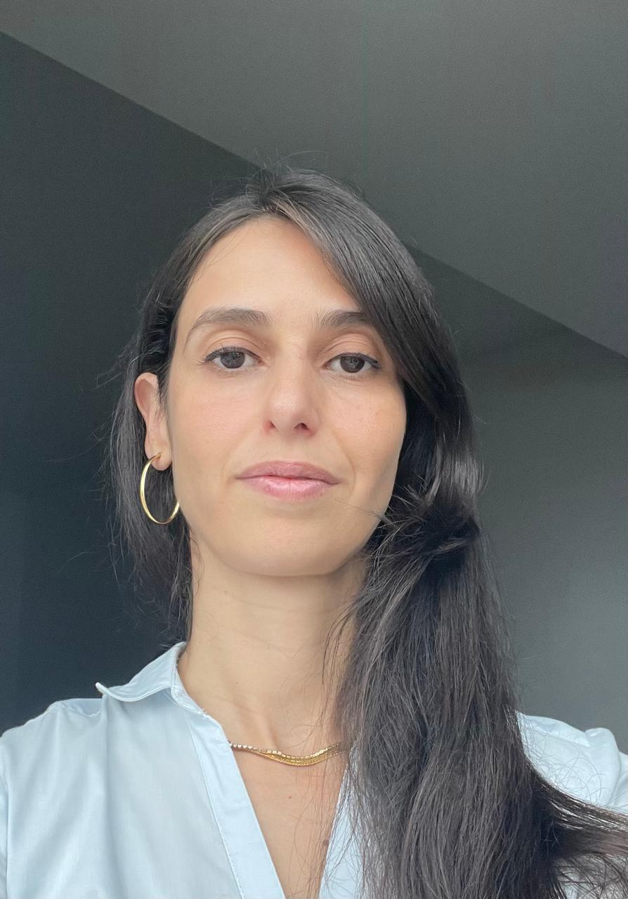

Simone Letícia C. G. Plaine
About Me
Hello! My name is Simone Leticia, and I'm passionate about technology, design, and continuous learning. I have a degree in Electrical Engineering from the University of São Paulo in Brazil, and I'm currently studying Software Development and Web Design at BYU Idaho. I live in Joinville, SC, Brazil, and I'm excited to learn more about web development.!
Joinville, Santa Catarina

Joinville is known as the City of Flowers and the Dance Festival. It is an industrial and cultural hub in southern Brazil, with beautiful landscapes and an excellent quality of life.